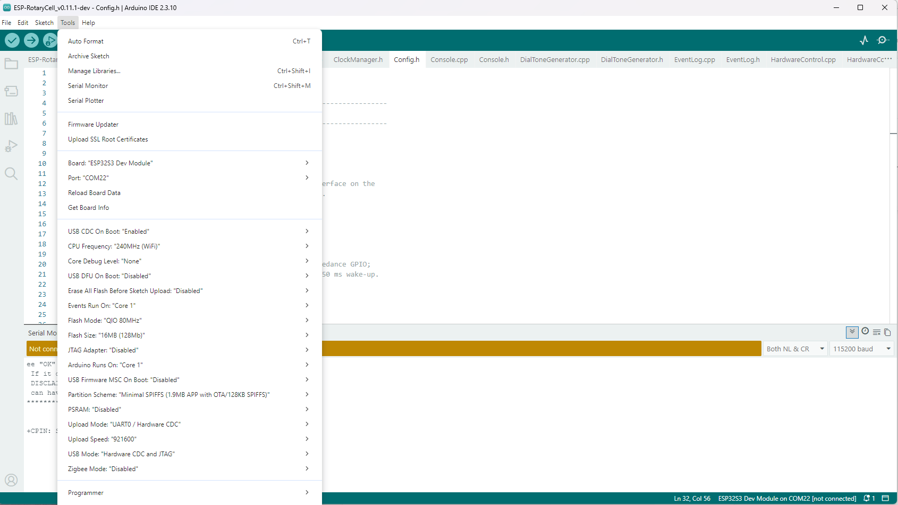
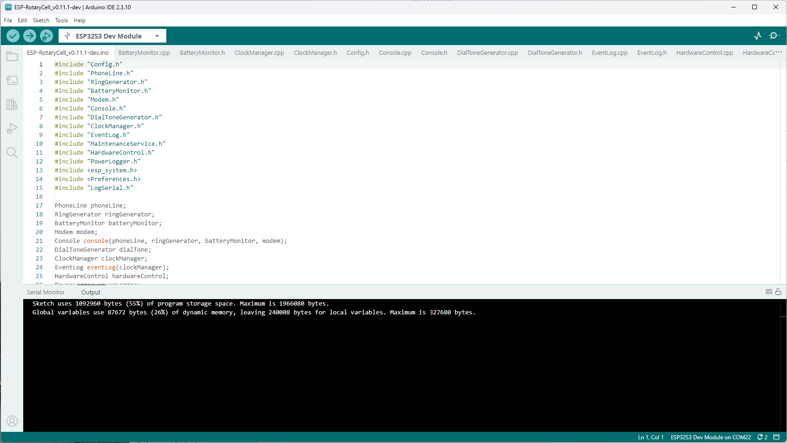
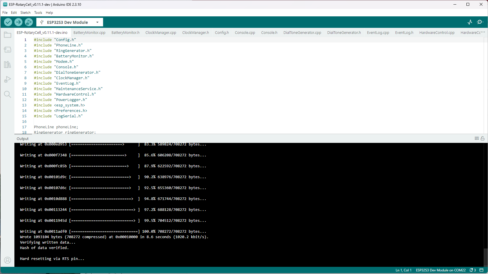
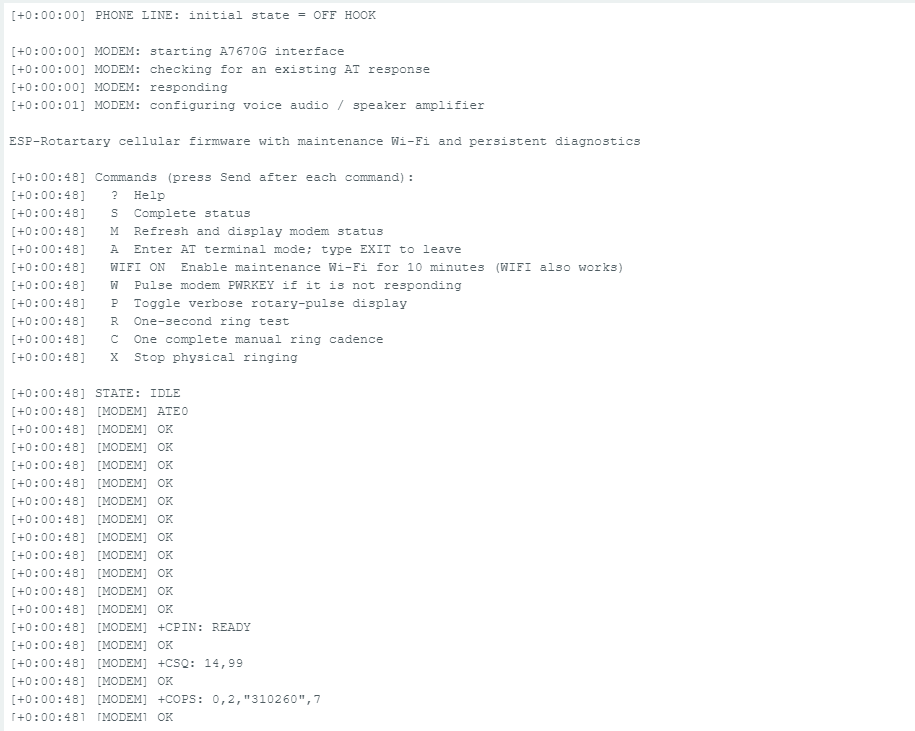
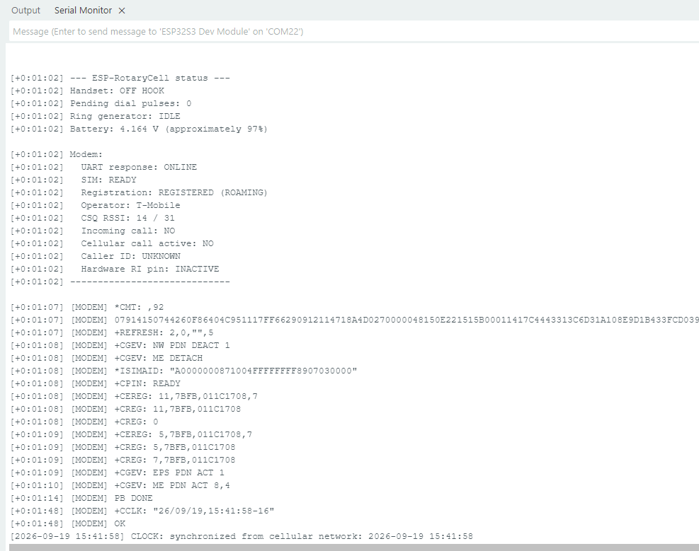
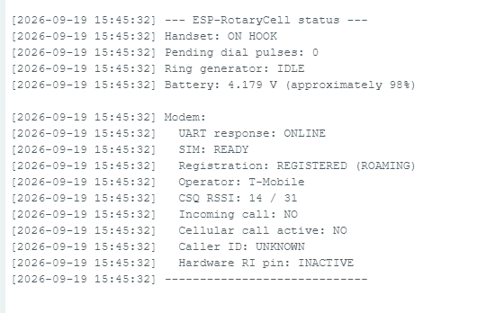

RotaryCell / build guide
Upload the firmware
The first installation is made through the LilyGO's ESP-USB connector using Arduino IDE. The modem's USB connector is not used for this step. Once a full image has been installed, later application updates can also be loaded through the maintenance web page.
This walkthrough uses Arduino IDE 2.3.10, Espressif's ESP32 Arduino core
3.3.11, and the ESP32S3 Dev Module target. The RotaryCell sketch uses only
libraries supplied with that ESP32 core, so no additional Arduino libraries
are required.
1. Install the ESP32 board package
Install Arduino IDE 2.x, open Tools → Board → Boards Manager, and install version 3.3.11 of esp32 by Espressif Systems.
Download the firmware source and open the .ino file from its complete
versioned folder. Arduino IDE should show the other .cpp and .h files as
tabs alongside the sketch; keep the whole folder together.
The currently tested PCB build uses
ESP-RotaryCell_v0.11.1-dev.
The repository also keeps the current stable release under
firmware/current.
2. Connect the controller
Connect a data-capable USB cable to the LilyGO port marked ESP-USB. Select the new serial port in Arduino IDE, then choose ESP32S3 Dev Module as the board.
Use these settings under Tools:
| Setting | Selection |
|---|---|
| USB CDC On Boot | Enabled |
| CPU Frequency | 240 MHz (WiFi) |
| Core Debug Level | None |
| USB DFU On Boot | Disabled |
| Erase All Flash Before Sketch Upload | Disabled |
| Events Run On | Core 1 |
| Flash Mode | QIO 80 MHz |
| Flash Size | 16 MB (128 Mb) |
| JTAG Adapter | Disabled |
| Arduino Runs On | Core 1 |
| USB Firmware MSC On Boot | Disabled |
| Partition Scheme | Minimal SPIFFS (1.9 MB APP with OTA / 128 KB SPIFFS) |
| PSRAM | Disabled |
| Upload Mode | UART0 / Hardware CDC |
| Upload Speed | 921600 |
| USB Mode | Hardware CDC and JTAG |
| Zigbee Mode | Disabled |

3. Compile and upload
Click Verify first. A successful build ends with the program-storage and dynamic-memory summaries rather than an error message.

Click Upload. Arduino IDE compiles again, connects to the ESP32-S3, writes
the image and verifies it. Wait for both Hash of data verified and
Hard resetting via RTS pin before disconnecting anything.

4. Watch the first boot
Open Tools → Serial Monitor, select 115200 baud, and set the line ending to Both NL & CR. The controller should report the handset state, start the A7670G interface and print the console command list.

The modem may take roughly a minute to initialize and register. Network events
will continue to appear in the Serial Monitor. Once network time is available,
the log changes from elapsed-time stamps such as [+0:01:02] to dated stamps.

Enter S and press Send for a complete status report. A ready installation
should show:
- the correct on-hook or off-hook handset state;
UART response: ONLINE;SIM: READY;- a registered cellular state and an operator name; and
- a plausible battery voltage.

The firmware can be uploaded with USB power alone, but the finished telephone cannot be tested that way. The AG1171 carrier is supplied from the LilyGO's battery path, so connect the battery before testing hook detection, rotary dialing, ringing or audio.
At the console, ? prints the available commands, P enables verbose rotary
pulse display, and WIFI opens the maintenance Wi-Fi without using the dial.